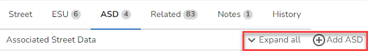
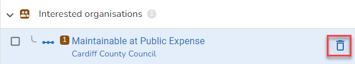

Depending upon the tab you have selected on the Street form there may be one or more actions you may perform for the relevant data type.
The actions for a Street are found when the Street tab is selected and you click Actions e.g.
|

The actions for an ESU are found when the ESU tab is selected and there are various places where actions are displayed. 1.At the top of the form.
2.If you hove over an existing ESU entry e.g.
3.If you select a single ESU from the list you will see a toolbar at the top of the map e.g.
4.If you select more than one ESU from the list you will see a slightly different toolbar at the top of the map e.g.
|


England & Wales only The actions for Highway Dedications are found when the ESU tab is selected and there are several places where actions are displayed. 1.If you hover over the Highway Dedication entry e.g.
2.If you select a Highway Dedication entry e.g.
|

England & Wales only The actions for One-way Exemptions are found when the ESU tab is selected and there are several places where actions are displayed. Please note these are only available if the ESU direction is not two-way. 1.If you hover over the One-way Exemption entry e.g.
2.If you select a One-way Exemption entry e.g.
|
The actions for ASD are found when the ASD tab is selected and there are several places where actions are displayed. 1.At the top of the form. 
2.If you hover an existing ASD record e.g. 
3.If you select an existing ASD record e.g.
|

There are several places where actions are displayed for street notes. 1.If you select the Notes tab for a street you have the option to add a note for the street e.g.
2.If you hover over a note on the Notes tab for the street e.g.
3.If you select the Note from the Notes tab you can delete a note for a street e.g.
|